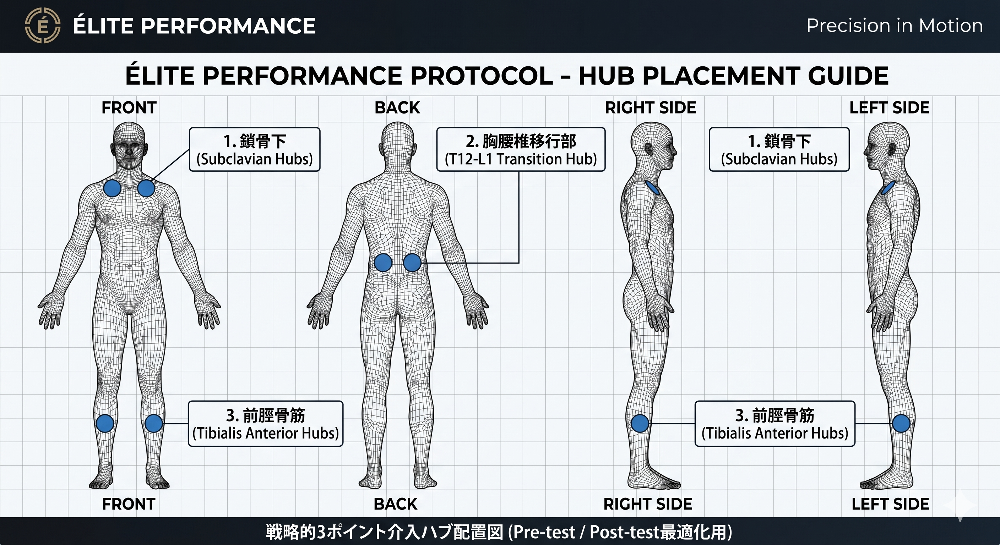

Precision in Motion
Check Hub Positions Before Assessment

Sensorimotor Integration Assessment
Objective Kinematic Metrics & Joint-by-Joint Evidence
本症例において認められた即時的な可動域の拡大、重心動揺の抑制（片脚立位時間の延長）、および出力効率の向上は、末梢組織の器質的変化ではなく、中枢神経系における最適フィードバック制御（Optimal Feedback Control: OFC）の最適化プロセスを示している。
激しい運動負荷や力学的ストレスは、固有受容器からの求心性信号に微小な「感覚ノイズ」を混入させ、小脳での身体状態推定（Body State Estimation）にエラーを生じさせる。脳はこの不確実性を検知すると、防衛反応としてガンマ運動ニューロンを介し無意識にブレーキ（保護的スパズム）をかけ、関節可動域を制限する。
本プロトコルでは、交差性症候群の生体力学的ハブである「鎖骨下」「胸腰椎移行部（T12-L1）」「前脛骨筋起始部」の皮膚機械受容器（メルケル細胞・ルフィニ小体）を表面刺激した。これにより、Aβ線維経由のクリアな求心性信号が脳へ入力され、小脳の感覚予測誤差が即座にリセットされた。主観的VASと、客観的動態データ（前屈・回旋・背屈等）が高度に同調して改善している事実は、感覚運動統合のデバッグによる神経促通と相反性神経抑制の正常化を定量的に立証している。